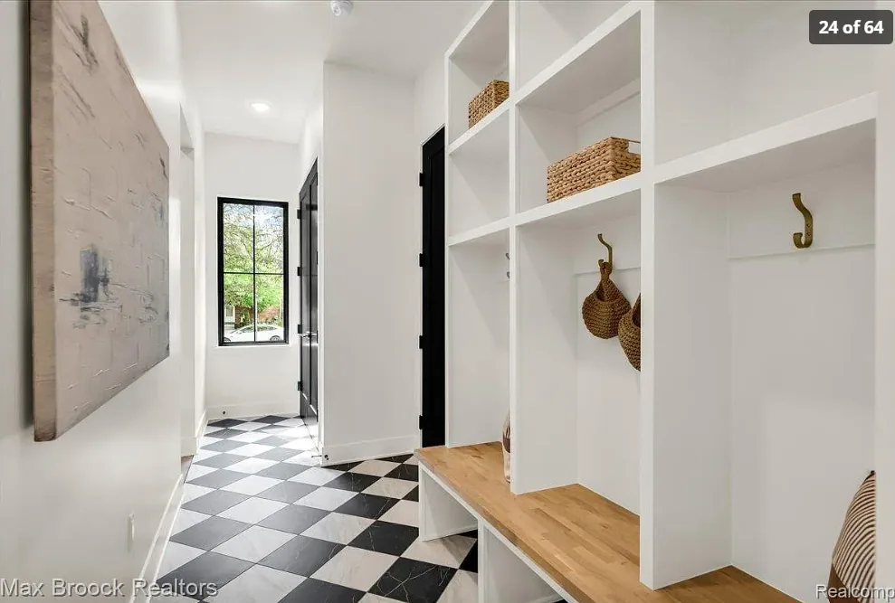

Mud Room
A connected builder-installed mudroom in muted matcha green (screen reference #8A9B74), with gold hooks and hardware. The color change applies here, not to the white-oak kitchen. Preserve the five cubbies and easy kick-under shoes. No washer/dryer or built-in accessory drawers.
Needs
Five wood-backed cubbies, each with two gold hooks mounted on its side dividers and one full-height, floor-level shoe opening below the bench. No bottom shelf, lip or intermediate shelf.
A proper enclosed 36-inch-wide, 24-inch-deep coat closet with a conventional side-to-side rod, lower shoe shelves and upper storage. A standard nominal 32-inch bifold door is shown closed; final builder door/frame/hardware selection remains open.
Five personal open shelf positions: Child 1, Child 2, Child 3, Mom, and Dad, children lowest. Each shows three small removable containers for socks, gloves and hats, bought separately rather than built-in drawers. Container allowance: 8.5 × 11 × 5.5 inches each; verify products against finished shelf openings.
Separate east-wall shelves target 21 extra shoe pairs, in addition to daily shoes beneath the bench and two shelves in the coat bay.
Space to charge vacuum cleaners.
Durable, waterproof, and easy-to-clean flooring.
Durable, washable wall finish behind the bench and hooks.
Drop zone for keys, mail, bags, and sunglasses.
Space for backpacks without blocking the walkway.
Wants
Motion-sensor lighting.
Pictures
Use this as a style reference, but provide five cubbies and ten hooks total. The current model has a 90-inch-long, 18-inch-deep bench with an 18-inch seat height along the garage-side wall. Each bay has full-height dividers, open shoe storage below, and three upper shelves. Storage rises to 8 feet 9 inches beneath the 9-foot ceiling.
| Location | Storage |
|---|---|
| Garage-side wall | Five-cubby bench with continuous painted backing to the floor. Each shoe opening remains approximately 17.1 inches wide, 17.25 inches deep and 15.7 inches high above tile/grout. Gold hooks point inward from opposite side panels, not the wall or back. |
| Former laundry corner | Enclosed coat closet with normal transverse hanging, not the former exposed front-to-back rack. Its closed face leaves approximately 41 inches to the opposite shoe shelves; keep the full 36-by-36-inch approach storage-free. |
| Kitchen-side wall, before the opening | 30-inch-wide, 14-inch-deep open personal-bin shelves with a key/charging shelf and seasonal shelves overhead. No drawer fronts or runners. |
| East wall, north of bench | 42-inch-wide, 14-inch-deep adjustable shoe shelves: three columns and seven levels target 21 pairs. Upper seasonal shelves remain open. This replaces the north-wall return that obstructed the coat bay. |
Full-height painted fillers close the 3-inch west-run and 2.4-inch east-run gaps. North-wall upper shelves connect the two runs, with at least 81.6 inches beneath them: a continuous U-shaped built-in rather than separate cabinets. The kitchen opening stays fixed. Shift the garage opening and its steps 6 inches away from the truck to x = 39.5-42.5 ft, and raise the opening to 8 feet tall. The central aisle remains about 49 inches, with the storage-free 5-foot-square arrival area retained. Door operation, seated users, hanging bags, landing/fire separation and actual construction require professional review.
The 1 ft grid now renders above the tile and grout rather than underneath them. It is off by default; switch it on in the Mudroom view. It remains depth-tested, so it does not show through furniture. Use Cubbies and Coats + bins for close inspection views of the two sides.
See the mudroom view. Check the family's largest actual shoes: the daily openings target a 14 × 16 × 14-inch pair envelope, not every possible boot. The separate 21-pair shelves target 12 × 12.5 × 9 inches per pair; larger footwear reduces capacity. Confirm builder scope, actual coats and bins, bench/rail/shelf supports, anchorage, charging and safe high-storage access. The garage entry retains two straight steps and a provisional 15-inch level difference; surveyed levels, rated door/swing, required landing or handrails, and circulation need architectural review.
